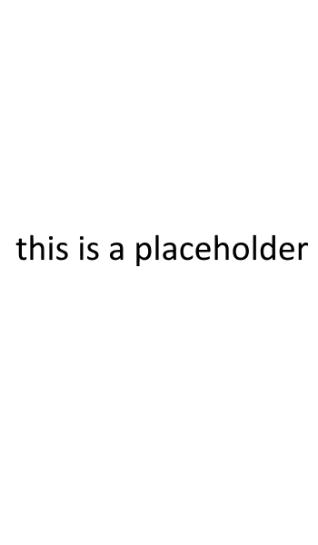

This is a simple bypasser that will bypass DeviantArt NSFW images without logging in. Insert the link to the image you want to bypass below and it will be redirected to the image.
This bypasser exploits DeviantArt's backend API to access NSFW images without having to log in. It also uses AllOrigins to get around the same-origin policy (probably) put in place to prevent people from accessing images without logging in.